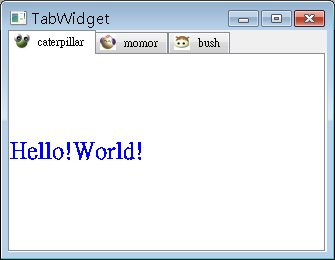

在版面配置上，可以會使用QTabWidget來作功能頁的分類，它提供多個顯示頁，可以藉由上方的標籤來選擇所要的功能頁面，下面的程式簡單的示範如何將元件加入QTabWidget成為一個標籤頁。
#include <QApplication>
#include <QTabWidget>
#include <QLabel>
#include <QIcon>
#include <QPushButton>
#include <QTextEdit>
int main(int argc, char *argv[]) {
QApplication app(argc, argv);
QTabWidget *tabWidget = new QTabWidget;
tabWidget->setWindowTitle("TabWidget");
tabWidget->addTab(
new QLabel("<h1><font color=blue>Hello!World!</font></h1>"),
QIcon("caterpillar_head.jpg"), "caterpillar");
tabWidget->addTab(
new QPushButton("Push XD"),
QIcon("momor_head.jpg"), "momor");
tabWidget->addTab(
new QTextEdit,
QIcon("bush_head.jpg"), "bush");
tabWidget->show();
return app.exec();
}
程式中設定了三個標籤頁，每個標籤頁中使用addTab()簡單的加入一個Widget，下圖為執行時的畫面：

|
|